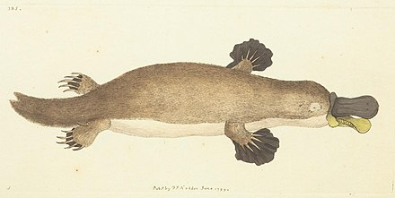

Platypuses were first discovered by Europeans in 1798 when sketches and a pelt were sent to Britain by Captain John Hunter. Scientists initially dismissed its validity believing that it was taxidermy.
Photo by Wikipedia - Frederick Nodder's 1799 sketch